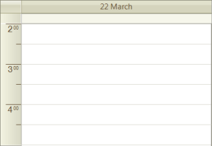
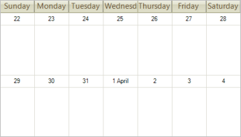

Working with Views
Working with Views
The scheduler displays dates and times using a "view" that can be
Day,
MultiDay,
Week,
Work Week,
Month and
Timeline.
The difference between a day view and a multi-day view is that while the day view is constrained to showing a single sequence of
consecutive days (for example 7th through 10th, or 10th through 12th, or just the 15th), the multi-day view can display all of the above sequences at once.
At any one time the scheduler displays a view using a descendant of the SchedulerView class: SchedulerDayView,
SchedulerWeekView,____SchedulerMonthView, and SchedulerTimelineView.
Each view has special properties particular to the view. Use the RadScheduler GetDayView(), GetWeekView(),____GetMonthView() and GetTimelineView() methods to get the respective views. Here's an
example that retrieves the day view and sets the ruler to start at the second hour and stop at the fifth hour:
[C#] Using the GetDatView method
SchedulerDayView dayView = radScheduler1.GetDayView();
dayView.RulerStartScale = 2;
dayView.RulerEndScale = 5;
[VB.NET] Using the GetDatView method
Dim dayView As SchedulerDayView = RadScheduler1.GetDayView()
dayView.RulerStartScale = 2
dayView.RulerEndScale = 5
'#End Region
'#Region activeViewType
RadScheduler1.ActiveViewType = SchedulerViewType.Day
'#End Region
'#Region weekCount
RadScheduler1.ActiveViewType = SchedulerViewType.Month
TryCast(RadScheduler1.ActiveView, SchedulerMonthView).WeekCount = 2
'#End Region
AddHandler RadScheduler1.ActiveViewChanging, AddressOf radScheduler1_ActiveViewChanging
End Sub
'#Region activeViewChanging
Private Sub radScheduler1_ActiveViewChanging(ByVal sender As Object, ByVal e As SchedulerViewChangingEventArgs)
Me.Text = String.Format("Old: {0} New: {1}", e.OldView.ViewType.ToString(), e.NewView.ViewType.ToString())
End Sub
'#End Region
End Class
After running the code, the day view for the scheduler looks like this screenshot:
Change between views by changing the ActiveViewType property to one of the SchedulerViewType enumeration members.
[C#] Assigning the ActiveViewType
radScheduler1.ActiveViewType = SchedulerViewType.Day;
[VB.NET] Assigning the ActiveViewType
RadScheduler1.ActiveViewType = SchedulerViewType.Day
'#End Region
'#Region weekCount
RadScheduler1.ActiveViewType = SchedulerViewType.Month
TryCast(RadScheduler1.ActiveView, SchedulerMonthView).WeekCount = 2
'#End Region
AddHandler RadScheduler1.ActiveViewChanging, AddressOf radScheduler1_ActiveViewChanging
End Sub
'#Region activeViewChanging
Private Sub radScheduler1_ActiveViewChanging(ByVal sender As Object, ByVal e As SchedulerViewChangingEventArgs)
Me.Text = String.Format("Old: {0} New: {1}", e.OldView.ViewType.ToString(), e.NewView.ViewType.ToString())
End Sub
'#End Region
End Class
Retrieve the view that is currently being displayed by using the ActiveView property, cast it to be the ActiveViewType
[C#] Using the ActiveView property
radScheduler1.ActiveViewType = SchedulerViewType.Month;
(radScheduler1.ActiveView as SchedulerMonthView).WeekCount = 2;
[VB.NET] Using the ActiveView property
RadScheduler1.ActiveViewType = SchedulerViewType.Month
TryCast(RadScheduler1.ActiveView, SchedulerMonthView).WeekCount = 2
'#End Region
AddHandler RadScheduler1.ActiveViewChanging, AddressOf radScheduler1_ActiveViewChanging
End Sub
'#Region activeViewChanging
Private Sub radScheduler1_ActiveViewChanging(ByVal sender As Object, ByVal e As SchedulerViewChangingEventArgs)
Me.Text = String.Format("Old: {0} New: {1}", e.OldView.ViewType.ToString(), e.NewView.ViewType.ToString())
End Sub
'#End Region
End Class

Detect changes to the view by handling the ActiveViewChanging and ActiveViewChanged events. As always, the "Changing" event arguments provide the ability to cancel the view change, but also the "old" and "new" views before and after the view changes transpires:
[C#] Handling the ActiveViewChanging event
void radScheduler1_ActiveViewChanging(object sender, SchedulerViewChangingEventArgs e)
{
this.Text = String.Format("Old: {0} New: {1}",
e.OldView.ViewType.ToString(), e.NewView.ViewType.ToString());
}
[VB.NET] Handling the ActiveViewChanging event
Private Sub radScheduler1_ActiveViewChanging(ByVal sender As Object, ByVal e As SchedulerViewChangingEventArgs)
Me.Text = String.Format("Old: {0} New: {1}", e.OldView.ViewType.ToString(), e.NewView.ViewType.ToString())
End Sub
'#End Region
End Class